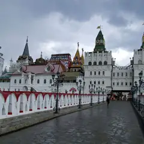

Подборку собрали 19 октября, прошедшие события скрыты. Свежая афиша — на главной
Подборка для девичника · данные на 15 октября
Девичник в Москве: куда пойти с подругами
133 плана для девичника и вечера с подругами: бранчи и кофейни, спа и бани, мастер-классы, караоке и бары. Ниже — самые популярные места из этих планов (всего их 206) и 65 событий на ближайшие две недели. Отметь пару вариантов и отправь ссылку подругам: каждая выберет, что ей нравится и когда удобно, — без двухсот сообщений в чате.
- 133 плана
- 206 мест
- 65 событий
Планы для девичника 24 из 133
- Смотровая iCITY · Бесплатная смотровая и коворкинг · м. Шелепиха
- 18 минут пешкомBamboo.Bar · Ресторан с террасой
Встретить закат на бесплатной круговой смотровой iCITY, а потом спуститься в квартал на террасу Bamboo.Bar с зеленью и фонтанами — удобно прямо после работы.
Открыть план: Бесплатная смотровая и терраса в СитиПозвать сюда: Бесплатная смотровая и терраса в Сити
Фото: BpbAlonka, CC BY-SA 3.0 · Wikimedia Commons
- Красная площадь · Площадь · м. Площадь Революции
- 9 минут пешкомМетрополь · Ресторан в историческом отеле
Прогулка по Красной площади, а с 13 до 17 по воскресеньям — знаменитый бранч-буфет «Метрополя» под витражным куполом с фонтаном.
Открыть план: Воскресный бранч в «Метрополе»Позвать сюда: Воскресный бранч в «Метрополе»
Фото: mos.ru, CC BY 4.0 · Wikimedia Commons
- ГЭС-2 · Дом культуры · м. Кропоткинская
- 4 минуты пешкомKaraoke Pro · Караоке-клуб
Бесплатные выставки ГЭС-2, а потом через дорогу Karaoke Pro: акустика Nexo, барабаны и бэк-вокал, в пятницу — живая группа. Открыто с четверга по субботу с 20:00.
Открыть план: ГЭС-2 и караоке с живой группойПозвать сюда: ГЭС-2 и караоке с живой группой
Фото: Юрий Д.К., CC BY 4.0 · Wikimedia Commons
- Музей русского импрессионизма · Музей · м. Белорусская
- 1 минута пешкомБольшевик Лофт · Ресторан со стендапом
Коровин, Серов и Кустодиев в Музее русского импрессионизма, а в соседнем краснокирпичном корпусе бывшей фабрики «Большевик» — ужин и стендап в Большевик Лофт.
Открыть план: Импрессионисты и стендап на фабрикеПозвать сюда: Импрессионисты и стендап на фабрике
Фото: Sergey A. Demidov, CC BY 4.0 · Wikimedia Commons
- Ландшафтный парк «Митино» · Парк · м. Волоколамская
- 13 минут пешкомLuna · Караоке-клуб
Круг вокруг пруда в ландшафтном парке «Митино», а потом караоке Luna: диджей, кухня и звукорежиссёр, который выставит микрофон даже новичку.
Открыть план: Парк «Митино» и караоке рядомПозвать сюда: Парк «Митино» и караоке рядом
Фото: AVRS, CC BY-SA 3.0 · Wikimedia Commons
- Патриаршие пруды · Пруд и сквер · м. Маяковская
- 1 минута пешкомКиану · Коктейльный бар
Вечерний круг вокруг Патриарших прудов, а потом маленький бар «Киану», из окна которого видно пруд: коктейли, роллы и диджей до 6 утра.
Открыть план: Патрики и бар с видом на прудПозвать сюда: Патрики и бар с видом на пруд
Фото: Dimа, CC BY-SA 3.0 · Wikimedia Commons
- Pixel Quest · Игровая комната · м. Бауманская
- 8 минут пешкомТри вокзала. Депо · Фудмолл
В Pixel Quest прыгаете по светящимся клеткам и проходите уровни вместе — весело и совсем не страшно, — а потом фудмолл «Три вокзала. Депо» в бывшем троллейбусном парке.
Открыть план: Световой пол и фудмолл в депоПозвать сюда: Световой пол и фудмолл в депо
Фото: Svetlov Artem, CC BY 4.0 · Wikimedia Commons
- Сиреневый сад · Сад · м. Черкизовская
- 11 минут пешкомBrancho · Кафе завтраков
Утренняя прогулка по Сиреневому саду на Щёлковском шоссе, а потом Brancho со своей пекарней: шакшука или скандинавский завтрак с пастрами.
Открыть план: Сиреневый сад и шакшукаПозвать сюда: Сиреневый сад и шакшука
Фото: Kristy2906, CC BY-SA 4.0 · Wikimedia Commons
- Театр мимики и жеста · Театр · м. Первомайская
- 12 минут пешкомGallery Lounge · Кальянная с караоке
Спектакль в Театре мимики и жеста, где всё понятно без слов, а потом караоке Gallery Lounge на Сиреневом бульваре — уж там слов будет много.
Открыть план: Театр без слов и караокеПозвать сюда: Театр без слов и караоке
Фото: Kotofey2016 / Википедия, CC BY-SA 4.0 · Wikimedia Commons
- Театр Наций · Театр · м. Чеховская
- 7 минут пешкомMendeleev · Музыкальный бар
Громкая постановка в Театре Наций в здании театра Корша, а потом Mendeleev в кирпичных сводах бывшей типографии: в будни джаз и соул, в выходные DJ до 4 утра.
Открыть план: Театр Наций и бар в старой типографииПозвать сюда: Театр Наций и бар в старой типографии
Фото: Mike1979 Russia, CC BY-SA 3.0 · Wikimedia Commons
- Александровский сад · Сад · м. Александровский сад
- 12 минут пешкомСеверяне · Ресторан с завтраками и бранчами
Утро в Александровском саду до толп, а потом «Северяне» на Большой Никитской: камерный ресторан с дровяной печью открывается в 9, бранч по выходным лучше бронировать.
Открыть план: Утро у Кремля и бранч у печиПозвать сюда: Утро у Кремля и бранч у печи
Фото: Минеева Ю. (Julmin), CC BY-SA 1.0 · Wikimedia Commons
- Усадьба Измайлово · Музей-усадьба · м. Партизанская
- 12 минут пешкомImmerscape · Квест с актёрами
Прогулка по острову усадьбы Измайлово мимо Покровского собора, а потом «Запретная дверь» в Immerscape: актрисы играют с порога и выручают, если совсем страшно.
Открыть план: Царский остров и «Запретная дверь»Позвать сюда: Царский остров и «Запретная дверь»
Фото: NVO, CC BY 3.0 · Wikimedia Commons
- Патриаршие пруды · Пруд и сквер · м. Маяковская
- 1 минута пешкомERWIN.Павильон · Ресторан на пруду
Неспешный круг вокруг пруда из «Мастера и Маргариты», а потом бранч в ресторане-павильоне Erwin прямо у пруда — он открыт с 9:00.
Открыть план: Бранч на ПатрикахПозвать сюда: Бранч на Патриках
Фото: Dimа, CC BY-SA 3.0 · Wikimedia Commons
- Музей Булгакова · Музей · м. Маяковская
- 8 минут пешкомPinch · Ресторан
Сначала «Нехорошая квартира» в Музее Булгакова, а потом восемь минут пешком до Pinch у Патриарших: завтраки там подают до 16:00, так что бранч получится в самый раз.
Открыть план: Булгаков и поздний бранчПозвать сюда: Булгаков и поздний бранч
Фото: Usolt, CC BY 3.0 · Wikimedia Commons
- Гоголевский бульвар · Бульвар · м. Кропоткинская
- 3 минуты пешкомИНО М2 · Гастропространство
Гоголевский бульвар и большое гастропространство в конструктивистском здании.
Открыть план: Бульвар и гастропространствоПозвать сюда: Бульвар и гастропространство
Фото: Panther, CC BY-SA 3.0 · Wikimedia Commons
- Винзавод · Центр современного искусства · м. Чкаловская
- 10 минут пешкомArtplay · Дизайн-центр
Выставки в бывших цехах, дизайн-лавки и кофе — неспешная суббота.
Открыть план: Галереи Винзавода и ArtplayПозвать сюда: Галереи Винзавода и Artplay
Фото: Lite, CC BY-SA 4.0 · Wikimedia Commons
- Галерея Церетели · Музей · м. Парк культуры
- 16 минут пешкомНитка · Русская чайная
Зимний сад и скульптуры в особняке на Пречистенке, потом чаепитие в отдельной комнате «Нитки».
Открыть план: Галерея Церетели и русская чайнаяПозвать сюда: Галерея Церетели и русская чайная
Фото: Sigwald, CC BY-SA 4.0 · Wikimedia Commons
- Музей «Гараж» · Музей современного искусства · м. Парк культуры
- 25 минут пешкомНескучный сад · Парк
Современное искусство и книжный в «Гараже», а потом минут 25 пешком через Парк Горького в Нескучный сад — старые деревья, овраги и набережная без толпы.
Открыть план: Гараж и Нескучный садПозвать сюда: Гараж и Нескучный сад
Фото: Garage Museum of Contemporary Art, CC BY-SA 4.0 · Wikimedia Commons
- Петровский путевой дворец · Дворец · м. Петровский парк
- 19 минут пешкомBrunchy Brunch · Арт-бистро
Краснокирпичный дворец в псевдоготике у «Динамо» (внутрь только с экскурсией), а потом завтраки весь день и выставки молодых художников в Brunchy, 19 минут пешком.
Открыть план: Готический дворец и бранчПозвать сюда: Готический дворец и бранч
Фото: WM wm WM, CC BY-SA 4.0 · Wikimedia Commons
- ГЭС-2 · Дом культуры · м. Кропоткинская
- 15 минут пешкомМузеон · Парк
Выставки и кино в бывшей электростанции, потом прогулка вдоль реки до Музеона.
Открыть план: ГЭС-2 и набережнаяПозвать сюда: ГЭС-2 и набережная
Фото: Юрий Д.К., CC BY 4.0 · Wikimedia Commons
- Усадьба Толстого в Хамовниках · Музей · м. Парк культуры
- 13 минут пешкомУсадьба Трубецких · Парк
- 1 минута пешкомRébellion · Кафе
Дом и сад, где Толстой жил зимами, потом минут пятнадцать пешком до старых лип и пруда в усадьбе Трубецких, а рядом — завтраки и кофе в Rébellion.
Открыть план: Две усадьбы ХамовниковПозвать сюда: Две усадьбы Хамовников
Фото: A.Savin, CC BY-SA 3.0 · Wikimedia Commons
- Кафе «Пушкинъ» · Ресторан · м. Пушкинская
- 7 минут пешкомNoor Electro · Коктейльный бар
Ужин в дворянской усадьбе XIX века, а потом коктейли у рояля в Noor Electro в семи минутах пешком.
Открыть план: Кафе «Пушкинъ» и NoorПозвать сюда: Кафе «Пушкинъ» и Noor
Фото: Mike1979 Russia, CC BY-SA 3.0 · Wikimedia Commons
- KGallery Bookcafe · Книжный и кофейня в усадьбе · м. Китай-город
- 9 минут пешкомOdmo Maison · Кафе и шоурум
Листаете книги об искусстве, кино и архитектуре в KGallery в усадьбе Филипповых, а потом шоурум 60 местных дизайнеров в особняке Морозовых и вафли-Эйфелевы башни.
Открыть план: Книжный в усадьбе и шоурум дизайнеровПозвать сюда: Книжный в усадьбе и шоурум дизайнеров
Фото: Никонико962, CC BY-SA 4.0 · Wikimedia Commons
- Смотровая ЦДМ · Смотровая площадка · м. Кузнецкий Мост
- 3 минуты пешкомWine & Crab · Ресторан и винный бутик
Смотровая на крыше ЦДМ, а потом краб и вино на Никольской.
Открыть план: Краб и вино на НикольскойПозвать сюда: Краб и вино на Никольской
Фото: A.Savin, CC BY-SA 3.0 · Wikimedia Commons


Места из этих планов 18 из 206
Красная площадь
Главная площадь страны: Кремль, Василий Блаженный, ГУМ и Исторический музей в одном кадре.
Подробнее и маршрут: Красная площадьПозвать сюда: Красная площадь
Фото: mos.ru, CC BY 4.0 · Wikimedia Commons
Большой Патриарший пер.
Пруд из «Мастера и Маргариты»: скамейки, кафе вокруг, зимой — каток.
Подробнее и маршрут: Патриаршие прудыПозвать сюда: Патриаршие пруды
Фото: Dimа, CC BY-SA 3.0 · Wikimedia Commons
Ботаническая ул., 4
Японский сад в Ботаническом: пагода, водопады и сакура весной. Вход платный.
Подробнее и маршрут: Японский садПозвать сюда: Японский сад
Фото: Carbonkidka, CC BY-SA 4.0 · Wikimedia Commons
Пресненская наб., 8, стр. 1
Ресторан в Москва-Сити с панорамной террасой, зеленью и фонтанами.
Подробнее и маршрут: Bamboo.BarПозвать сюда: Bamboo.Bar
Фото: BpbAlonka, CC BY-SA 3.0 · Wikimedia Commons
Страстной бул., 8А
Две звезды Michelin 2021
Фермерские продукты и вид на центр с седьмого этажа.
Подробнее и маршрут: Twins GardenПозвать сюда: Twins Garden
Фото: Tamara Ivanova-Issayeva, CC BY-SA 4.0 · Wikimedia Commons
Александровский сад
Сад вдоль Кремлёвской стены: Вечный огонь, Итальянский грот и смена почётного караула.
Подробнее и маршрут: Александровский садПозвать сюда: Александровский сад
Фото: Минеева Ю. (Julmin), CC BY-SA 1.0 · Wikimedia Commons
Театральный пр., 2
Новое
Парадный зал отеля «Метрополь» под витражным куполом с фонтаном. По воскресеньям с 13 до 17 — знаменитый бранч-буфет, в остальные дни утром завтраки. Для особого повода.
Подробнее и маршрут: МетропольПозвать сюда: Метрополь
Фото: Никонико962, CC BY-SA 4.0 · Wikimedia Commons
Большая Садовая ул., 10
«Нехорошая квартира» №50, где жил Булгаков. Вт–вс, по четвергам до 21:00.
Подробнее и маршрут: Музей БулгаковаПозвать сюда: Музей Булгакова
Фото: Usolt, CC BY 3.0 · Wikimedia Commons
Крымский Вал, 2
Парк скульптур и прогулка по набережной Москвы-реки.
Подробнее и маршрут: МузеонПозвать сюда: Музеон
Фото: sailko, CC BY-SA 3.0 · Wikimedia Commons
Новорязанская ул., 23, стр. 1
60 корнеров в бывшем троллейбусном депо и большая крыша-терраса. До 23, в пт–сб до 00.
Подробнее и маршрут: Три вокзала. ДепоПозвать сюда: Три вокзала. Депо
Фото: Svetlov Artem, CC BY 4.0 · Wikimedia Commons
ул. Льва Толстого, 21
Деревянный дом, где Толстой жил зимами, и сад при нём.
Подробнее и маршрут: Усадьба Толстого в ХамовникахПозвать сюда: Усадьба Толстого в Хамовниках
Фото: A.Savin, CC BY-SA 3.0 · Wikimedia Commons
Смоленская пл., 3 (16 этаж)
Звезда Michelin 2021
Ресторан со звездой Michelin под стеклянным куполом с видом на центр. 12:00–00:00.
Подробнее и маршрут: White RabbitПозвать сюда: White Rabbit
Фото: Wikimaniawikimania, CC BY-SA 4.0 · Wikimedia Commons
Старая Басманная ул., 15А, стр. 4
Антикварная галерея в особняке XVIII века на Басманной: джаз у винтажного рояля, кабаре и вечера по мотивам фильмов Дэвида Линча.
Подробнее и маршрут: Галерея «Другое дело»Позвать сюда: Галерея «Другое дело»
Фото: Svetlov Artem, CC BY-SA 4.0 · Wikimedia Commons
Гоголевский бул.
Тенистый бульвар от Арбатской площади к Храму Христа Спасителя.
Подробнее и маршрут: Гоголевский бульварПозвать сюда: Гоголевский бульвар
Фото: Panther, CC BY-SA 3.0 · Wikimedia Commons
ул. Пречистенка, 12/2
Главный пушкинский музей в усадьбе Хрущёвых на Пречистенке.
Подробнее и маршрут: Государственный музей ПушкинаПозвать сюда: Государственный музей Пушкина
Фото: NVO, CC BY-SA 2.5 · Wikimedia Commons
Болотная наб., 15
Бывшая электростанция напротив Кремля: выставки, кино и бар у входа. Вход бесплатный по регистрации на сайте, 11:00–22:00.
Подробнее и маршрут: ГЭС-2Позвать сюда: ГЭС-2
Фото: Юрий Д.К., CC BY 4.0 · Wikimedia Commons

Измайловское ш., 73Ж
Сказочный деревянный кремль у Партизанской: музеи, мастер-классы и блошиный «Вернисаж» рядом.
Подробнее и маршрут: Измайловский кремльПозвать сюда: Измайловский кремль
Фото: Simm, CC BY-SA 2.5 · Wikimedia Commons
Моховая ул., 15/1, стр. 1
Иммерсивный ужин-шоу в «Национале»: каждая подача — часть спектакля.
Подробнее и маршрут: КалейдоскопПозвать сюда: Калейдоскоп
Фото: A.Savin, CC BY-SA 3.0 · Wikimedia Commons


Куда сходить с подругами в ближайшие две недели 8 из 65
Театр Вахтангова, Основная сцена · м. Смоленская · от 5 500 ₽ · 16+
«Онегин» Римаса Туминаса — музыка, пластика и образы вместо школьной хрестоматии. Символ Вахтанговского, до конца года всего три показа.
Подробнее: Евгений ОнегинПозвать сюда: Евгений ОнегинБилеты : Евгений Онегин (страница с билетами, откроется в новой вкладке)
Фото: A.Savin, Free Art License · Wikimedia Commons
Гастротеатр «Калейдоскоп» · м. Охотный ряд · 18 000–25 000 ₽ · 12+
Гастрошоу у Манежной: два часа путешествия от пирамид Гизы до садов Семирамиды, к каждому чуду — свой сет. Вариант для особого свидания.
Подробнее: 7 чудес светаПозвать сюда: 7 чудес светаБилеты : 7 чудес света (страница с билетами, откроется в новой вкладке)
Фото: A.Savin, CC BY-SA 3.0 · Wikimedia Commons
ГМИИ им. А. С. Пушкина, Главное здание · м. Кропоткинская
Большой проект о буддийском искусстве России — спокойный и созерцательный. Последние дни: выставка закрывается 1 ноября, в понедельник музей не работает.
Подробнее: Алмазная колесница. Буддийское искусство РоссииПозвать сюда: Алмазная колесница. Буддийское искусство РоссииБилеты : Алмазная колесница. Буддийское искусство России (страница с билетами, откроется в новой вкладке)
Фото: Ghirlandajo, CC BY-SA 3.0 · Wikimedia Commons
Театр Наций, Новое пространство · м. Чеховская · 12+
Часовая премьера Александра Шумилина на музыку Антона Светличного, где вместо сюжета — эмоции. В каждый из дней два показа: в 18:00 и 20:00.
Подробнее: Новая опера переживаний «Жизнь»Позвать сюда: Новая опера переживаний «Жизнь»Билеты : Новая опера переживаний «Жизнь» (страница с билетами, откроется в новой вкладке)
Фото: Mike1979 Russia, CC BY-SA 3.0 · Wikimedia Commons
Иммерсивный театр «Морфеус» · м. Павелецкая · 3 900–4 900 ₽ · 16+
Иммерсивная комедия с закрытыми глазами: семь зрителей попадают в Москву 1903 года с театральными интригами и кафе. Полтора часа, несколько сеансов в день.
Подробнее: Поезд, Чехов, два орлаПозвать сюда: Поезд, Чехов, два орлаБилеты : Поезд, Чехов, два орла (страница с билетами, откроется в новой вкладке)
Третьяковская галерея · м. Третьяковская · от 450 ₽ · 6+
Редкий шанс увидеть пастели Кипренского, Левитана, Серова и Врубеля — их почти не выставляют. По тому же билету — основная экспозиция; в понедельник закрыто.
Подробнее: Хрупкое искусство. Пастель из фондов графики XVIII — начала XX векаПозвать сюда: Хрупкое искусство. Пастель из фондов графики XVIII — начала XX векаБилеты : Хрупкое искусство. Пастель из фондов графики XVIII — начала XX века (страница с билетами, откроется в новой вкладке)
Фото: A.Savin, CC BY-SA 3.0 · Wikimedia Commons
Мастерская Петра Фоменко, Старая сцена · м. Москва-Сити · 5 000–30 000 ₽
Легендарный спектакль Петра Фоменко по повести Бориса Вахтина: нежная деревенская история о любви и войне. Два часа без антракта, билеты уходят первыми.
Подробнее: Одна абсолютно счастливая деревняПозвать сюда: Одна абсолютно счастливая деревняБилеты : Одна абсолютно счастливая деревня (страница с билетами, откроется в новой вкладке)
Стендап клуб на Трубной, Большой зал · м. Трубная · 950–1 500 ₽ · 18+
Фирменный вечер клуба: опытные комики с обкатанным материалом. Показы почти каждый день, по пятницам и субботам — в 19:00 и 21:00.
Подробнее: Биг стендапПозвать сюда: Биг стендапБилеты : Биг стендап (страница с билетами, откроется в новой вкладке)


Как позвать
- Выбери план, место или событие — в карточке адрес, цены и маршрут в Яндекс Картах.
- Нажми «Позвать сюда» — соберётся приглашение-игра для свидания или голосование для компании.
- Отправь ссылку в любой мессенджер: тебе ответят, а компания отметит, куда и когда может. Бесплатно и без регистрации.